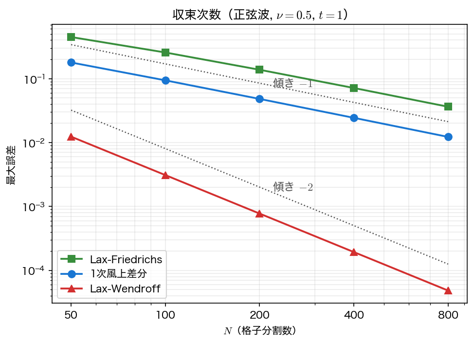
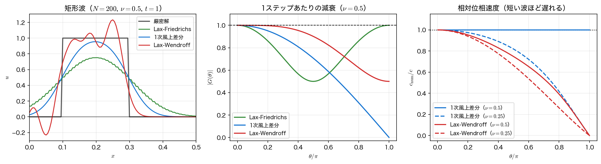

高次精度スキームと単調性
風上差分は安全だが、1次精度である。前ページの表のとおり、\(N\) を 16 倍にしてもガウス波のピークは \(0.577\to0.894\) にしか戻らない。実用的な計算で \(\Delta x\) を 16 倍細かくするのは容易ではないから、手法そのものの精度を上げる必要がある。
本ページでは代表的な2つの古典的スキームを導入する。Lax–Friedrichs 法（1次だが素直な構造で、保存則の理論的な出発点）と Lax–Wendroff 法（2次精度）である。そして「2次精度にすると振動が出る」という現象に出会い、それが偶然の不出来ではなく定理として避けられないことを見る。
Lax–Friedrichs 法
FTCS が無条件不安定だったのは、更新式に \(u_j^n\) がそのまま残っていたためだった。そこでこの項だけを隣接2点の平均で置き換える。
これが Lax–Friedrichs 法である。乱暴な処方に見えるが、整理すると
——やはり2点の重み付き平均であり、\(\lvert\nu\rvert\le1\) なら両方の重みが非負で和が \(1\) になる。風上差分と同じ理由で単調性が保証される。増幅率は
で、安定条件はやはり \(\lvert\nu\rvert\le1\)（CFL 条件）である。
問題は、この「平均をとる」操作が強い数値粘性を持ち込むことである。\(\frac12(u_{j-1}+u_{j+1})=u_j+\frac{\Delta x^2}{2}\,\partial_x^2 u+O(\Delta x^4)\) なので、FTCS の修正方程式に \(\dfrac{\Delta x^2}{2\Delta t}\,\partial_x^2 u\) が加わり
となる。風上差分の \(\dfrac{c\Delta x}{2}(1-\nu)\) と比べると、\(\nu=0.5\) では
でちょうど3倍である。実測でもピークは \(0.6323\)（風上の \(0.8164\) に対して）まで落ちる。
\(\nu\to0\) で数値粘性が発散する
\(\alpha_{\rm num}^{\rm LF}\propto1/\nu\) である。\(\Delta x\) を固定して \(\Delta t\) だけ小さくすると、数値粘性はいくらでも大きくなる。「刻みを小さくすれば安全」という直感が通用しない典型例で、Lax–Friedrichs 法は \(\nu\) を 1 の近くで運用しなければ使いものにならない。
Lax–Friedrichs 法は精度の点では風上差分に劣るが、非線形の保存則 \(\partial_t u+\partial_x f(u)=0\) にそのまま拡張でき（\(f\) の形を選ばない）、単調性が保証されるという性質から、衝撃波を含む問題の理論的な基準として今も使われている。
Lax–Wendroff 法
2次精度のスキームは、時間方向のテイラー展開を2次まで残すことで作れる。
ここで移流方程式から \(\partial_t u=-c\,\partial_x u\)、したがって \(\partial_t^2 u=c^2\,\partial_x^2 u\) である。時間微分を空間微分に読み替えるというこの操作は、前ページの修正方程式の導出とまったく同じ発想である。
右辺の \(\partial_x u\) と \(\partial_x^2 u\) を、ともに2次精度の中心差分で置き換える。
これが Lax–Wendroff 法（1960）である。時間・空間ともに2次精度で、3点ステンシル・1段という手軽さのわりに強力である。
構造を読むと、この式は FTCS ＋ちょうど必要なだけの数値粘性であることがわかる。FTCS の修正方程式には \(a_2=-c^2\Delta t/2\) という負の拡散があり、それが無条件不安定の原因だった。第3項が加える拡散は \(\dfrac{\nu^2}{2}\Delta x^2/\Delta t=\dfrac{c^2\Delta t}{2}\) ——負の拡散をちょうど打ち消す量である。2階の誤差項が消えるから2次精度になり、その次に残るのが3階＝分散項
である。前ページで位相遅れを予言したのがこの式だった。
増幅率は
で、安定条件はまたしても \(\lvert\nu\rvert\le1\) である。注目すべきは減衰の効き方で、風上差分の \(\lvert G\rvert^2=1-2\nu(1-\nu)(1-\cos\theta)\) が \((1-\cos\theta)=O(\theta^2)\) に比例するのに対し、Lax–Wendroff 法は \((1-\cos\theta)^2=O(\theta^4)\) に比例する。長い波はほとんど減衰しない——精度が高いとはそういうことだが、同時に誤差を削り落とす仕組みも失っている。
収束次数を測る
例題3の正弦波 \(\sin2\pi x\) を \(\nu=0.5\)、\(t=1\)（1周）で解き、格子を倍にしながら最大誤差を測る。

| \(N\) | Lax–Friedrichs | 誤差比 | 1次風上差分 | 誤差比 | Lax–Wendroff | 誤差比 |
|---|---|---|---|---|---|---|
| 50 | \(4.4725\times10^{-1}\) | — | \(1.7888\times10^{-1}\) | — | \(1.2371\times10^{-2}\) | — |
| 100 | \(2.5633\times10^{-1}\) | 1.745 | \(9.3997\times10^{-2}\) | 1.903 | \(3.0989\times10^{-3}\) | 3.992 |
| 200 | \(1.3761\times10^{-1}\) | 1.863 | \(4.8152\times10^{-2}\) | 1.952 | \(7.7505\times10^{-4}\) | 3.998 |
| 400 | \(7.1350\times10^{-2}\) | 1.929 | \(2.4372\times10^{-2}\) | 1.976 | \(1.9378\times10^{-4}\) | 4.000 |
| 800 | \(3.6335\times10^{-2}\) | 1.964 | \(1.2261\times10^{-2}\) | 1.988 | \(4.8447\times10^{-5}\) | 4.000 |
誤差比が \(2\) に近づけば1次、\(4\) に近づけば2次である。差は劇的で、Lax–Wendroff 法は \(N=50\) の粗い格子で、風上差分の \(N=800\) とほぼ同じ精度（ともに \(1.2\times10^{-2}\)）を出している。1次元でこの差なら、2次元では格子点数にして \(16^2=256\) 倍、3次元では 4096 倍の節約に相当する。高次精度スキームが求められる理由はここにある。
不連続解での振動
ところが、例題2の矩形波に同じ3手法を当てると、様相が一変する。

| 手法 | \(\max u\) | \(\min u\) | 全変動 TV | 最大誤差 |
|---|---|---|---|---|
| 厳密解 | 1.0000 | 0.0000 | 2.0000 | — |
| Lax–Friedrichs | 0.7516 | 0.0000 | 1.5031 | 0.4941 |
| 1次風上差分 | 0.9544 | 0.0000 | 1.9087 | 0.4801 |
| Lax–Wendroff | 1.2321 | \(-0.2313\) | 3.8470 | 0.6111 |
読み取れることは3つある。
- Lax–Wendroff 法は \(23\%\) 行き過ぎ、\(-0.23\) まで下回る。 濃度や密度を計算しているなら、負の値は物理的に意味をなさない。非線形の方程式ならその時点で計算が破綻する。
- 全変動が \(2\) から \(3.847\) に増えている。 厳密解では立ち上がりと立ち下がりの計 \(2\) しかない変動が、新しい極大・極小の発生によって倍近くになった。風上差分と Lax–Friedrichs 法は \(\mathrm{TV}\le2\) を保っている（TVD 性）。
- 最大誤差で見ると2次精度スキームのほうが悪い。 \(0.6111\) 対 \(0.4801\)。前節で 25 倍の精度差を見せた手法が、不連続を含んだ途端に逆転する。
この振動は数値分散の帰結である。不連続はあらゆる波数の成分を含み、Lax–Wendroff 法ではそれらが波数ごとに違う速さで進む（右パネル）。短い波ほど遅れるので、成分が不連続の後方に取り残されて振動として見える。しかもこの振動は格子を細かくしても消えない——演習3で \(N=800\) まで確かめるが、行き過ぎ幅はむしろ \(0.2133\to0.2464\) と増え、\(\mathrm{TV}\) も \(3.37\to4.53\) と増える。
ギブス現象との違い
不連続の近くで振動が出るという点はフーリエ級数のギブス現象（第13回）と似ているが、正体は別である。ギブス現象は「有限個の滑らかな基底で不連続を表そうとする」ことから来る近似の問題で、振動の幅は縮まないが領域は狭まる。ここで見ている振動は時間発展のたびに位相がずれて溜まっていくもので、格子を細かくしても幅が縮まない。分散性の誤差は蓄積するという双曲型固有の事情である。
Godunov の定理：2次精度と単調性は両立しない
「もっとうまい2次精度スキームを作れば、振動しないようにできるのではないか」——残念ながら、できない。
Godunov の定理（1959）
係数が解に依存しない線形の差分スキームで、単調性を保つものは、高々1次精度である。
証明の筋は難しくない。単調性を保つ線形スキームは \(u_j^{n+1}=\sum_k a_k u_{j+k}^n\) の係数 \(a_k\) がすべて非負でなければならず（負の係数があれば、それを突く初期値で新しい極値が作れる）、非負係数の重み付き平均は本質的に「なまし」の操作なので、2階の誤差項を消せない、というものである。本ページで見てきたことは、この定理の実例そのものだった。
| 手法 | 係数がすべて非負か | 精度 | 単調性 |
|---|---|---|---|
| 1次風上差分 | \(1-\nu,\ \nu\ \ge0\) | 1次 | あり |
| Lax–Friedrichs | \(\frac{1\pm\nu}{2}\ \ge0\) | 1次 | あり |
| Lax–Wendroff | \(\frac{\nu^2-\nu}{2}<0\)（\(0<\nu<1\)） | 2次 | なし |
したがって、精度と非振動を両立させたければ線形であることを捨てるしかない。解の様子に応じて手法を切り替える、つまり係数が解に依存する非線形スキームである。
現代の標準的な処方がフラックスリミッタ（flux limiter）である。移流方程式を保存形
で書き、セル境界の流束を「風上差分の流束＋補正項」として
と定める。\(r_j\) は解の滑らかさの指標で、滑らかなところでは \(r_j\approx1\)、不連続の近くでは \(r_j\) が \(0\) や負や巨大な値になる。リミッタ関数 \(\phi\) が
- \(\phi\equiv0\) なら 1次風上差分
- \(\phi\equiv1\) なら Lax–Wendroff 法
を再現するので、滑らかなところでは \(\phi\approx1\)（2次精度）、不連続の近くでは \(\phi\approx0\)（単調） となるように \(\phi(r)\) を設計すればよい。minmod、van Leer、superbee といった関数が知られており、こうして作られたスキームを TVD スキーム、より高次のものを MUSCL・ENO・WENO と呼ぶ。詳細は本講義の範囲を超えるが、すべての出発点が本ページで見た「精度か単調性か」のトレードオフであることは押さえておいてほしい。
手法の選び方
| 手法 | 精度 | 散逸 | 分散 | 単調性 | 使いどころ |
|---|---|---|---|---|---|
| FTCS | — | 負（発散） | — | — | 使わない |
| Lax–Friedrichs | 1次 | 非常に強い（\(\propto1/\nu\)） | 小 | あり | 理論的基準・堅牢性が最優先のとき |
| 1次風上差分 | 1次 | 強い（\(\propto\Delta x\)） | 小 | あり | 不連続がある問題・まず動かしたいとき |
| Lax–Wendroff | 2次 | 弱い | 大 | なし | 滑らかな解・精度が要るとき |
| TVD（リミッタ付き） | 2次※ | 適応的 | 小 | あり | 実用計算の標準 |
※滑らかな領域で2次、極値の近傍では1次に落ちる。
実務上の判断は単純である。解が滑らかだとわかっているなら Lax–Wendroff（かそれ以上の高次精度）、不連続や急勾配を含むなら TVD スキーム、とにかく壊れずに動かしたいならまず風上差分。そして、どれを選んでも \(\nu\) を 1 に近く保つことが精度に効く。
サンプルコード
3手法を同じ枠組みで実装し、正弦波で収束次数を、ガウス波で数値粘性を、矩形波で単調性と全変動を測る。新しく書くのは Lax–Friedrichs 法の1ステップ lf_step だけで、upwind_step は最初のページのサンプルから、lw_step と solve は前ページのサンプルから1文字も変えずに写す。main では3つの1ステップ関数を配列 scheme に並べ、手法番号 s で選ぶ。
#include <stdio.h>
#include <stdlib.h>
#include <math.h>
/* 第11回 移流方程式(3): Lax-Friedrichs 法・1次風上差分・Lax-Wendroff 法の比較
u_t + c u_x = 0, c = 1, 周期境界 [0,1), t = 1 でちょうど1周
例題3（正弦波 sin 2 pi x）で収束次数を、
例題1（ガウス波）で数値粘性の大きさを、
例題2（矩形波）で単調性と全変動を調べる。 */
static const double PI = 3.14159265358979323846;
static const double CADV = 1.0;
static const double SIG0 = 0.0707106781186548;
static double u_gauss(double x) { return exp(-100.0*(x - 0.3)*(x - 0.3)); }
static double u_sine(double x) { return sin(2.0*PI*x); }
static double u_square(double x) { return (x >= 0.1 && x < 0.3) ? 1.0 : 0.0; }
/* Lax-Friedrichs 法 1ステップ: FTCS の u_j を (u_{j-1} + u_{j+1})/2 に替える */
static void lf_step(int N, double nu, const double u[], double un[])
{
for (int j = 0; j < N; j++) {
int jm = (j - 1 + N) % N, jp = (j + 1) % N; /* 周期境界 */
un[j] = 0.5*(u[jm] + u[jp]) - 0.5*nu*(u[jp] - u[jm]);
}
}
/* 1次風上差分（c > 0）1ステップ: un_j = u_j - nu (u_j - u_{j-1}) */
static void upwind_step(int N, double nu, const double u[], double un[])
{
for (int j = 0; j < N; j++) {
int jm = (j - 1 + N) % N; /* 周期境界 */
un[j] = u[j] - nu*(u[j] - u[jm]);
}
}
/* Lax-Wendroff 法 1ステップ: FTCS に (nu^2/2)(u_{j+1} - 2u_j + u_{j-1}) を足す */
static void lw_step(int N, double nu, const double u[], double un[])
{
for (int j = 0; j < N; j++) {
int jm = (j - 1 + N) % N, jp = (j + 1) % N; /* 周期境界 */
un[j] = u[j] - 0.5*nu*(u[jp] - u[jm])
+ 0.5*nu*nu*(u[jp] - 2.0*u[j] + u[jm]);
}
}
/* 初期波形 u0 から1ステップ関数 step で時刻 T まで進め、結果を u に返す */
static void solve(int N, double nu_req, void (*step)(int, double, const double *, double *),
double T, double (*u0)(double), double u[], double *nu_out)
{
double dx = 1.0/N;
int nt = (int)(T/(nu_req*dx/CADV) + 0.5);
if (nt < 1) nt = 1;
double dt = T/nt, nu = CADV*dt/dx;
double *un = malloc(N * sizeof(double));
for (int j = 0; j < N; j++) u[j] = u0(j*dx);
for (int n = 0; n < nt; n++) {
step(N, nu, u, un);
for (int j = 0; j < N; j++) u[j] = un[j];
}
free(un);
*nu_out = nu;
}
int main(void)
{
const char *name[] = {"Lax-Friedrichs", "1次風上差分 ", "Lax-Wendroff "};
/* 手法番号 s = 0, 1, 2 の1ステップ関数 */
void (*scheme[])(int, double, const double *, double *) = {lf_step, upwind_step, lw_step};
double u[4096], nu;
FILE *fc = fopen("advection_convergence.dat", "w"); /* 作図用 */
if (fc == NULL) { perror("advection_convergence.dat"); return 1; }
fprintf(fc, "# scheme(0=LF 1=upwind 2=LW) N max_error\n");
printf("=== 収束次数（例題3: 正弦波 sin 2 pi x, nu = 0.5, T = 1）===\n");
for (int s = 0; s < 3; s++) {
printf(" --- %s ---\n", name[s]);
printf(" N 最大誤差 誤差比\n");
double prev = 0.0;
for (int N = 50; N <= 800; N *= 2) {
solve(N, 0.5, scheme[s], 1.0, u_sine, u, &nu);
double e = 0.0;
for (int j = 0; j < N; j++) {
double d = fabs(u[j] - u_sine((double)j/N));
if (d > e) e = d;
}
printf(" %4d %10.4e", N, e);
if (prev > 0.0) printf(" %6.3f", prev/e);
printf("\n");
fprintf(fc, "%d %d %.10e\n", s, N, e);
prev = e;
}
}
fclose(fc);
printf(" → Lax-Friedrichs と風上は1次、Lax-Wendroff は2次精度\n");
printf("\n=== 数値粘性の大きさ（例題1: ガウス波, N = 200, nu = 0.5, T = 1）===\n");
printf(" 修正方程式の数値粘性 風上: (c dx/2)(1-nu), Lax-Friedrichs: (c dx/2)(1-nu^2)/nu\n");
printf(" スキーム alpha_num 予測ピーク 実測ピーク\n");
for (int s = 0; s < 2; s++) {
double dx = 1.0/200, an;
solve(200, 0.5, scheme[s], 1.0, u_gauss, u, &nu);
an = (s == 0) ? 0.5*CADV*dx*(1.0 - nu*nu)/nu : 0.5*CADV*dx*(1.0 - nu);
double pred = SIG0/sqrt(SIG0*SIG0 + 2.0*an*1.0), peak = 0.0;
for (int j = 0; j < 200; j++) if (u[j] > peak) peak = u[j];
printf(" %s %9.6f %9.6f %9.6f\n", name[s], an, pred, peak);
}
printf(" → nu = 0.5 では Lax-Friedrichs の数値粘性は風上の3倍\n");
printf("\n=== 不連続解（例題2: 矩形波, N = 200, nu = 0.5, T = 1）===\n");
printf(" 厳密解は max = 1, min = 0, 全変動 TV = 2\n");
printf(" スキーム max min TV 最大誤差\n");
FILE *fq = fopen("advection_square.dat", "w"); /* 作図用 */
if (fq == NULL) { perror("advection_square.dat"); return 1; }
fprintf(fq, "# scheme(0=LF 1=upwind 2=LW) x u u_exact\n");
for (int s = 0; s < 3; s++) {
solve(200, 0.5, scheme[s], 1.0, u_square, u, &nu);
for (int j = 0; j <= 200; j++)
fprintf(fq, "%d %.10e %.10e %.10e\n",
s, j/200.0, u[j % 200], u_square(j/200.0));
double mx = -1e30, mn = 1e30, tv = 0.0, e = 0.0;
for (int j = 0; j < 200; j++) {
if (u[j] > mx) mx = u[j];
if (u[j] < mn) mn = u[j];
tv += fabs(u[(j + 1) % 200] - u[j]);
double d = fabs(u[j] - u_square((double)j/200));
if (d > e) e = d;
}
printf(" %s %8.4f %8.4f %8.4f %8.4f\n", name[s], mx, mn, tv, e);
}
fclose(fq);
printf(" → 風上・Lax-Friedrichs は TV <= 2（単調・新しい極値を作らない）\n");
printf(" Lax-Wendroff は TV > 2 で、不連続の前後に振動（オーバーシュート）が出る\n");
return 0;
}
コンパイル・実行:
実行結果
=== 収束次数（例題3: 正弦波 sin 2 pi x, nu = 0.5, T = 1）===
--- Lax-Friedrichs ---
N 最大誤差 誤差比
50 4.4725e-01
100 2.5633e-01 1.745
200 1.3761e-01 1.863
400 7.1350e-02 1.929
800 3.6335e-02 1.964
--- 1次風上差分 ---
N 最大誤差 誤差比
50 1.7888e-01
100 9.3997e-02 1.903
200 4.8152e-02 1.952
400 2.4372e-02 1.976
800 1.2261e-02 1.988
--- Lax-Wendroff ---
N 最大誤差 誤差比
50 1.2371e-02
100 3.0989e-03 3.992
200 7.7505e-04 3.998
400 1.9378e-04 4.000
800 4.8447e-05 4.000
→ Lax-Friedrichs と風上は1次、Lax-Wendroff は2次精度
=== 数値粘性の大きさ（例題1: ガウス波, N = 200, nu = 0.5, T = 1）===
修正方程式の数値粘性 風上: (c dx/2)(1-nu), Lax-Friedrichs: (c dx/2)(1-nu^2)/nu
スキーム alpha_num 予測ピーク 実測ピーク
Lax-Friedrichs 0.003750 0.632456 0.632313
1次風上差分 0.001250 0.816497 0.816440
→ nu = 0.5 では Lax-Friedrichs の数値粘性は風上の3倍
=== 不連続解（例題2: 矩形波, N = 200, nu = 0.5, T = 1）===
厳密解は max = 1, min = 0, 全変動 TV = 2
スキーム max min TV 最大誤差
Lax-Friedrichs 0.7516 0.0000 1.5031 0.4941
1次風上差分 0.9544 0.0000 1.9087 0.4801
Lax-Wendroff 1.2321 -0.2313 3.8470 0.6111
→ 風上・Lax-Friedrichs は TV <= 2（単調・新しい極値を作らない）
Lax-Wendroff は TV > 2 で、不連続の前後に振動（オーバーシュート）が出る
3つの初期波形で「どの手法が最良か」の答えが変わっていることに注意してほしい。正弦波なら Lax–Wendroff が圧勝（25 倍の精度差）、矩形波では最大誤差でも風上差分に負ける。手法の優劣は問題の性質を抜きにしては決まらない——第2回の求根、第3回の連立1次方程式から一貫して繰り返してきたことが、ここでも成り立っている。
可視化
schemes.c は advection_convergence.dat（1列目 手法番号 0=Lax–Friedrichs, 1=風上, 2=Lax–Wendroff、2列目 \(N\)、3列目 最大誤差）と advection_square.dat（1列目 手法番号、以下 \(x\)、数値解、厳密解）を書き出す。
import numpy as np
import matplotlib.pyplot as plt
cv = np.loadtxt("advection_convergence.dat") # 列: scheme, N, max error
sq = np.loadtxt("advection_square.dat") # 列: scheme, x, u, u_exact
names = ["Lax-Friedrichs", "upwind", "Lax-Wendroff"]
# --- 図1: 収束次数 ---
fig, ax = plt.subplots(figsize=(6.5, 4.6))
for s, name in enumerate(names):
d = cv[cv[:, 0] == s]
p = np.polyfit(np.log(d[:, 1]), np.log(d[:, 2]), 1)[0]
ax.loglog(d[:, 1], d[:, 2], "o-", ms=5, label=f"{name} (slope {p:.2f})")
ax.set_xlabel("$N$")
ax.set_ylabel("max error at $t = 1$")
ax.set_title("sine wave, $\\nu = 0.5$")
ax.grid(alpha=0.3, which="both")
ax.legend(fontsize=9)
fig.tight_layout()
fig.savefig("advection_convergence.png", dpi=150)
# --- 図2: 不連続解での振る舞い ---
fig, ax = plt.subplots(figsize=(7.5, 4.6))
d = sq[sq[:, 0] == 0]
ax.plot(d[:, 1], d[:, 3], color="gray", lw=1.2, label="exact")
for s, name in enumerate(names):
d = sq[sq[:, 0] == s]
ax.plot(d[:, 1], d[:, 2], lw=1.4, label=name)
ax.axhline(0.0, color="k", lw=0.6, ls=":")
ax.set_xlim(0.0, 0.5)
ax.set_xlabel("$x$")
ax.set_ylabel("$u(x,\\,1)$")
ax.set_title("square wave, $N = 200$, $\\nu = 0.5$")
ax.grid(alpha=0.3)
ax.legend(fontsize=9)
fig.tight_layout()
fig.savefig("lw_dispersion.png", dpi=150)
plt.show()
実行:
1枚目では最小二乗で測った傾きがほぼ \(-1,\ -1,\ -2\) になり（粗い格子を含めるので1次の2本は \(-0.9\) 台になる）、表の誤差比 \(2,\ 2,\ 4\) と同じことを言っている。2枚目では Lax–Wendroff だけが不連続の後方に振動をつくり、\(u=0\) の点線を割り込む。本文の図はこれに \(\lvert G(\theta)\rvert\) と \(c_{\rm num}/c\) の2枚を加えた3枚組だが、その2枚は前ページの増幅率から描いたもので、schemes.c は計算していない。
まとめ
- Lax–Friedrichs 法 \(u_j^{n+1}=\frac{1+\nu}{2}u_{j-1}^n+\frac{1-\nu}{2}u_{j+1}^n\)。1次精度・単調だが、数値粘性 \(\dfrac{c\Delta x}{2}\dfrac{1-\nu^2}{\nu}\) が非常に大きく、\(\nu\to0\) で発散する。
- Lax–Wendroff 法 \(u_j^{n+1}=u_j^n-\frac{\nu}{2}(u_{j+1}^n-u_{j-1}^n)+\frac{\nu^2}{2}(u_{j+1}^n-2u_j^n+u_{j-1}^n)\)。時間展開を2次まで残し、\(\partial_t^2 u=c^2\,\partial_x^2 u\) で読み替えて作る。2次精度で、正弦波では風上差分の \(1/16\) の格子で同等の精度を出す。
- どの手法も安定条件は CFL 条件 \(\lvert\nu\rvert\le1\)。
- 不連続解では Lax–Wendroff 法に \(23\%\) の行き過ぎと振動が出て \(\mathrm{TV}>2\) になり、格子を細かくしても消えない。原因は数値分散である。
- Godunov の定理：線形かつ単調なスキームは高々1次精度。精度と非振動の両立には非線形スキーム（フラックスリミッタ・TVD・WENO）が必要になる。
- 手法選択は問題次第。滑らかなら高次精度、不連続を含むならリミッタ付き、まず動かすなら風上差分。